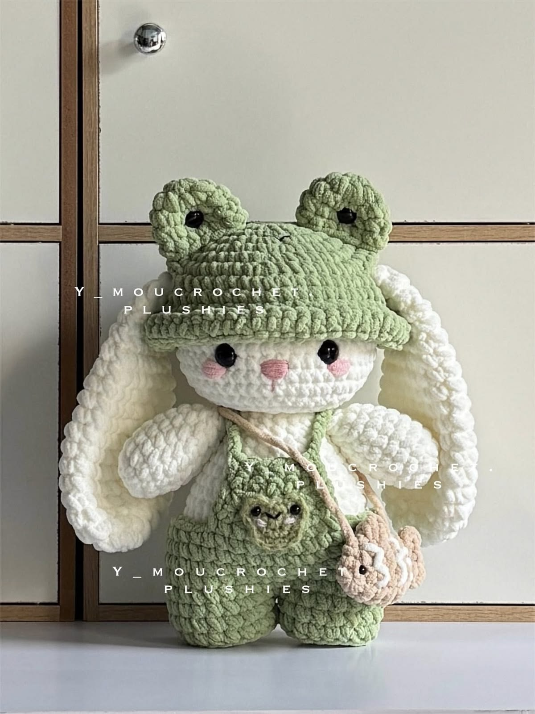
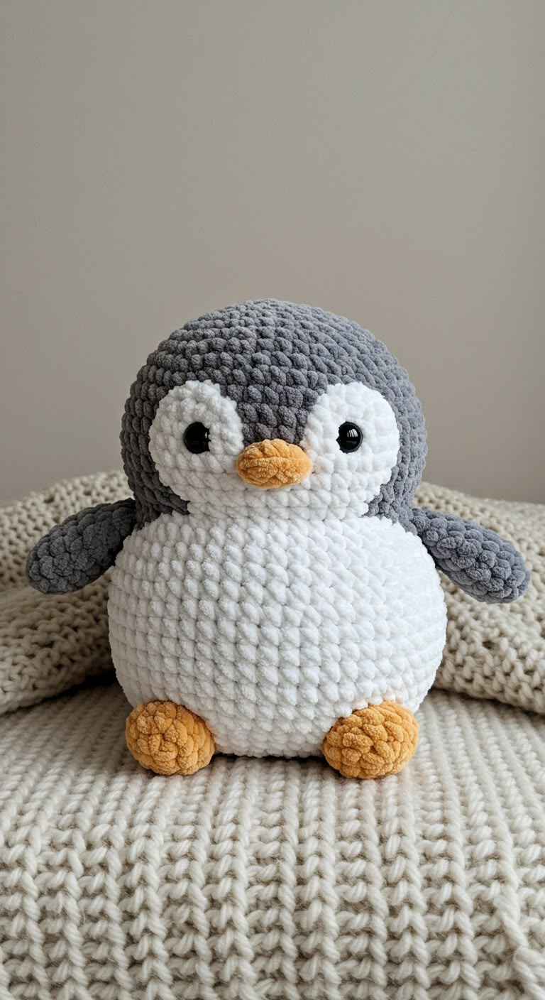

My creations.
Little characters, cozy textures and lots of color. Select any creation to discover its story, materials and tutorial.

Amigurumi · Plushie
Frog Hat Bunny
A fluffy white bunny wearing a sage-green frog hat and matching overalls, with a tiny crossbody bag.
View project
Amigurumi · Plushie
Carrot Pocket Bunny
A soft white bunny in periwinkle-blue overalls, finished with a little orange carrot tucked into the pocket.
View project
Amigurumi · Plushie
Cozy Teddy Bear
A warm-toned teddy bear with chocolate-brown overalls, a matching hat and a creamy little sweater.
View project
Amigurumi · Plushie
Pocket Penguin
A round, cuddly penguin with a white belly, gray wings and sunny golden feet and beak.
View project